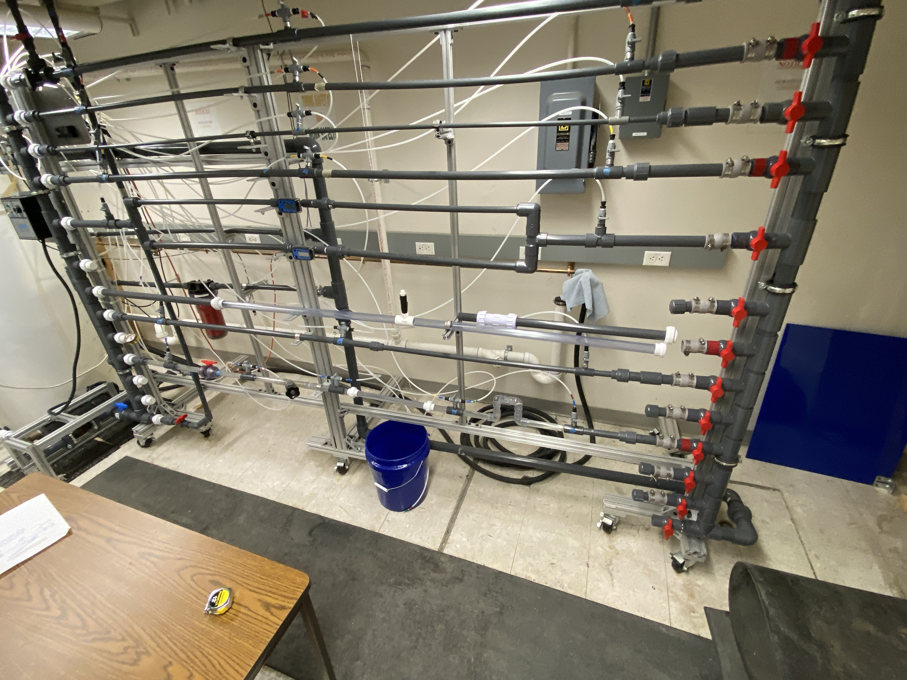
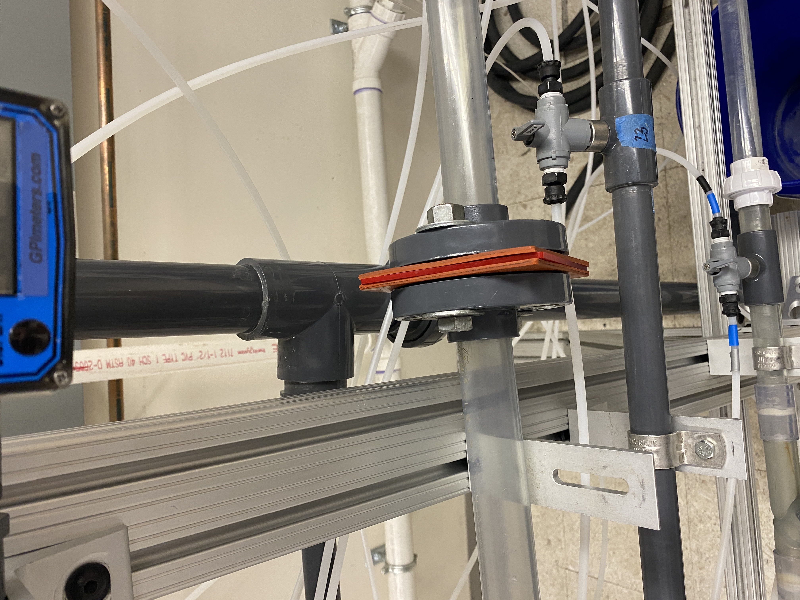
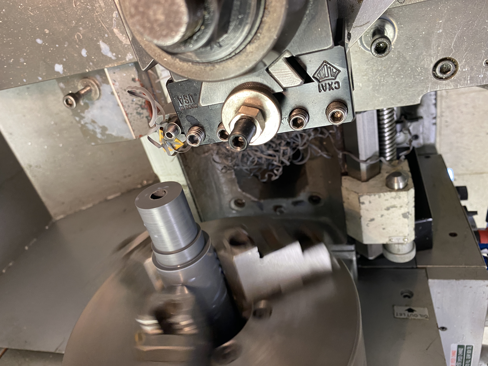
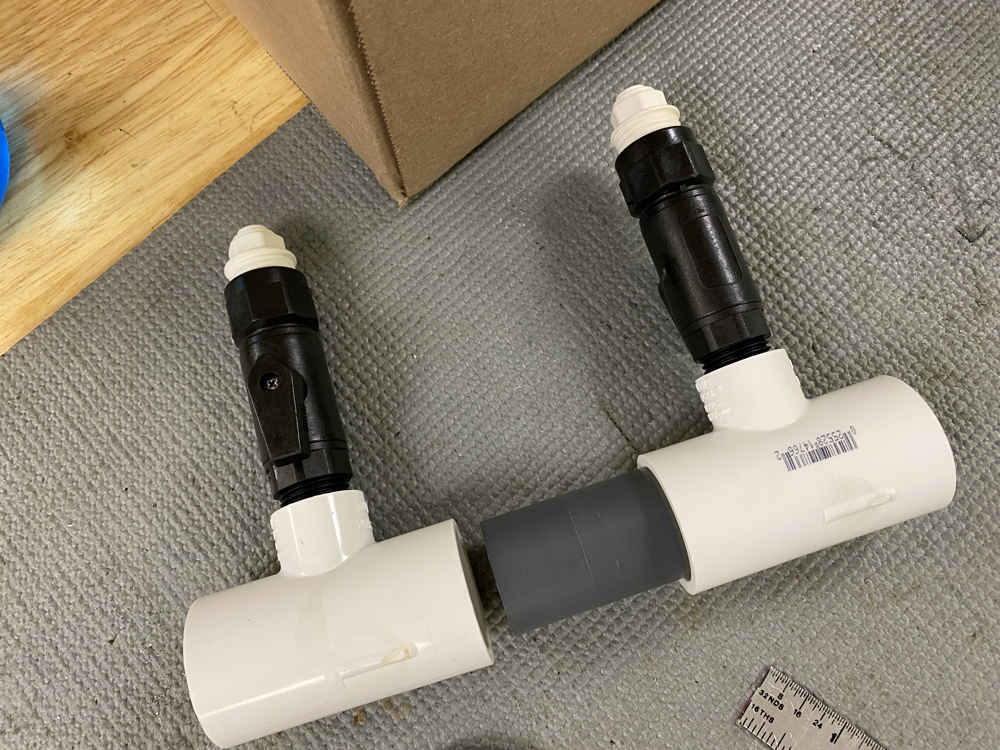
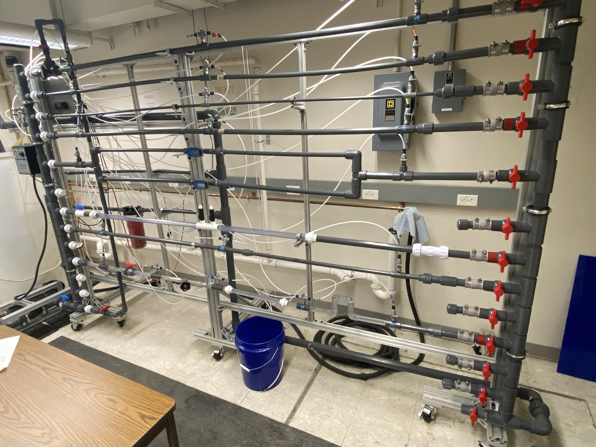

Planning Phase

My task for this project was to design a replacement orifice
plate to fit the existing setup shown on the left. The overall
system is meant to display fluid mechanics principles to junior
undergraduates in mechanical engineering.

There were two main issues with the existing system. Firstly,
the original orifice plate was difficult for students to
effectively replace during the course of the laboratory.
Additionally, the pressure measurement measurement locations
were placed relatively far from each other. This meant that
students needed to subtract the pressure losses over that length
of pipe to isolate the pressure drop caused solely by the
orifice plate.
 After making an assessment of the system and evaluating what
components should go where, I made a basic mockup of the system
in Figma to enable me to easily redesign the system in a low
fidelity way.
After making an assessment of the system and evaluating what
components should go where, I made a basic mockup of the system
in Figma to enable me to easily redesign the system in a low
fidelity way.
Construction Phase

After finishing the design of the system in Figma and later in
Solidworks, I then began building the system. The orifice plate
piece itself was machined from stock PVC purchased off McMaster
Carr. The rest of the PVC parts were purchased off the shelf.
All part product codes were maintained in the Solidworks file to
enable easy traceability. The beauty of my design was that a new
orifice section could be quickly swapped in and out by hand
loosening and tightening the unions involved in the design. Dr.
Marra preferred that a replacement section was essentially one
continuous part.

After machining the part out of the stock PVC, I was easily able
to fit everything together with my off-the-shelf parts and seal
things together with a solvent welding solution.

The rest of the installation came together as detailed in my
Figma and Solidworks drawings with sections cut as necessary.
Here is my replacement system in place of the previous
system.